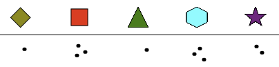
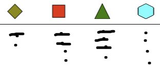

Solution
For each shape that enters the house, one can draw a point below the corresponding shape.
For example, during a game, you can get the drawing below.

This drawing indicates that we have seen 1 diamond, 3 squares, 1 triangle, 3 hexagons, and 2 stars.
For each shape that enters the house, one can draw a point below the corresponding shape. For each shape that comes out of the house, you can hide the point with a line.
For example, during a game, you can get the drawing below.

This drawing indicates that we saw two diamonds enter one of which 1 came out, we saw 4 squares of which 2 came out, we saw 4 triangles of which 3 came out, and we saw 4 hexes, none of which came out.
To note the pairs of shapes that enter the house, several methods are possible, including the following three :
The first method is to draw, before starting, all possible pairs. It takes a little time because you have to draw 12 shapes, but then it's very easy. Just add one point for each pair of shape that enters the house. Here is an example :

The second method is even more effective because it only requires drawing 3 shapes. We begin by drawing the three possible shapes on the left. When a pair of shapes arrives, we find the line corresponding to the first form, the column corresponding to the second form, and we draw a point. Here is an example :

The third method does not require any prior drawing. The idea is to use traits. For each pair of shapes that enter the house, draw a line connecting the two forms that constitutes the pair. Here is an example :

However, this representation requires a little more care than others to be well organized during the game, in order to be able to detect when the house contains 3 identical pairs.
It's infromatics!